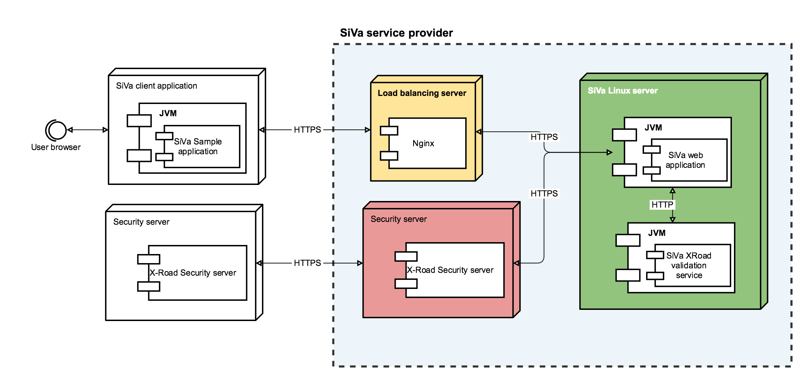

Deployment view

Load balancer
Load balancer can distribute traffic between SiVa nodes when there is more then one instance running. SiVa do not set any specific requirements for load balancer but in diagram the Nginx reverse proxy option is shown.
SiVa application server
SiVa validation service server that will provide the service needs to have JVM installed) both more commonly known options Oracle or OpenJDK are supported. SiVa application is built as executable JAR and can be configured like system service on Linux operating system.
Read more about running Spring Boot applications as Linux system service
SiVa validation service can run in cluster because it does not keep or create any sessions with client application or service.
Note
The single executable JAR option may change in the future because we are considering isolating each validation service and SiVa web application into separate JVM instance
Database server
SiVa database server requirements are dictated by PüPKI application and from these requirements needs to be PostgreSQL. Currently there are no special requirements for database server nor database setup.
Note
Database requirements section will be updated when analysis and development will begin on modification of PüPKI application
Development
It may be possible that we will build administration user interface as part of SiVa project so the database and type of database RDBMS or NoSQL may change in the future
SiVa administration server
SiVa administration will use PüPKI administration user interface to manage authorized service users and collect information about basic service usage by authorized clients.
Only requirement currently known is that Python programming language support must be present in the server.
Note
More detailed information about SiVa administration server setup will be provided when development and analysis will begin for administration service
Development
There is alternative option that we will build administration user interface from scratch using Java and Spring Boot